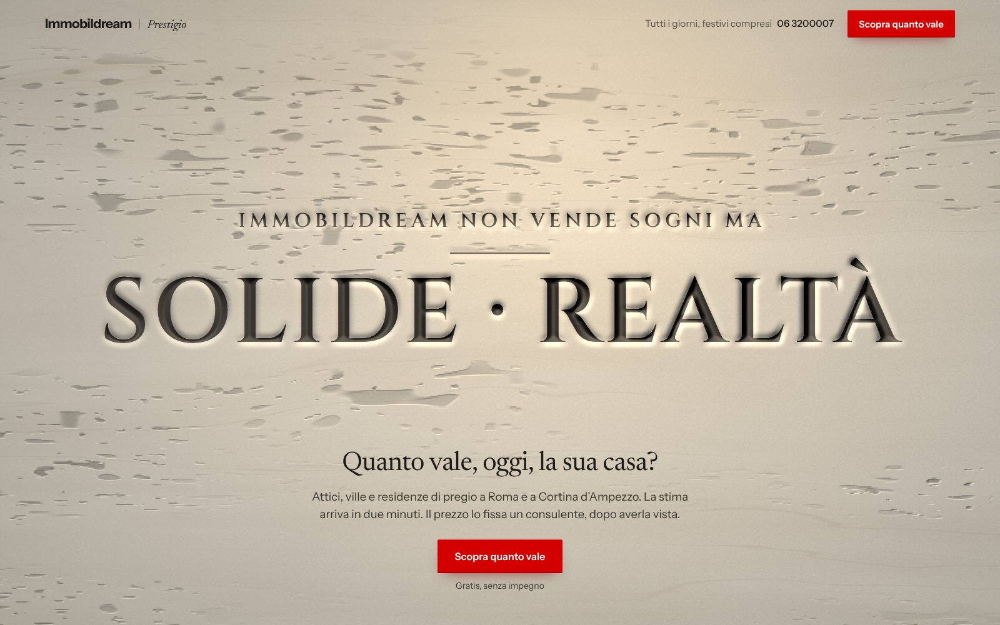
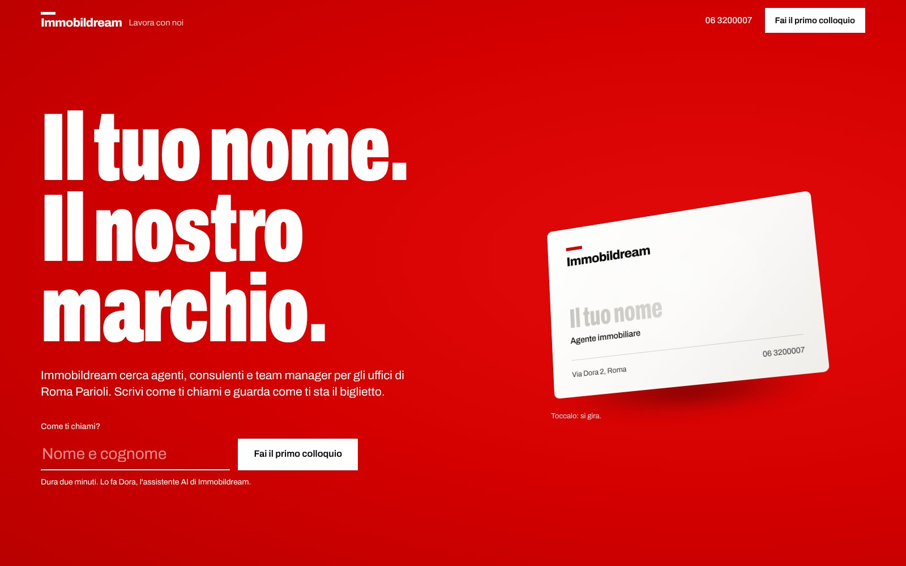

Le due landing di Immobildream.
Una per chi vende casa, una per chi vuole entrare in squadra. Sono da aprire e da provare: rispondono.

Quanto vale, oggi, la sua casa?
Il vostro claim inciso nel travertino, con la luce che segue il cursore. Il proprietario racconta la casa a parole sue: Dora compila la scheda, fa la stima e prepara la telefonata del consulente.
Apri la landing
Il tuo nome. Il nostro marchio.
Il candidato scrive come si chiama e si ritrova sul biglietto da visita. Dora fa il primo colloquio, propone il ruolo e fissa il secondo in via Dora 2.
Apri la landingDentro tutte e due c'è Dora.
È l'assistente AI che abbiamo pensato per voi. Il nome viene dalla vostra sede. Capisce il testo libero, fa le domande che mancano e vi consegna richieste e candidature già in ordine.
- Cosa arriva a voiUn'email e un messaggio WhatsApp per ogni richiesta: i dati, la stima o il profilo, e una priorità A, B o C. Nelle due landing lo vedete dopo aver compilato, nel riquadro «dietro le quinte».
- In questa anteprimaDora risponde con regole preparate e non parte nessun dato. Online la colleghiamo a un modello AI, ai vostri valori di zona e alle vostre regole di selezione.
- Per le vostre campagneLe pagine sono predisposte per pixel e conversioni. Chi segue le inserzioni le collega senza toccarle.
- Da dove vengono i testiClaim, sede, contatti, ruoli e condizioni vengono da immobildream.it. I testi nuovi e i valori al metro quadro sono proposte da confermare con voi.
Un progetto alla volta.
Si può partire da una sola. L'altra usa lo stesso impianto e arriva dopo.
Scriveteci su WhatsAppAnteprima riservata, preparata da Umbra per Immobildream RE. Non è il sito ufficiale.umbragency.it